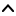

| Top |  |
This file provides commonly used parameters for user interaction during authentication sessions. For each of those a getter and setter is defined, on GSignondSessionData container.
This container is used in two directions: by plugins to specify the parameters for user interaction that is then performed by SignonUI component, and by SignonUI to return the results of that interaction to the plugins. See GSignondPlugin for the user interaction API from the plugins' perspective.
The parameters that are set by the plugin and read by signon UI are captcha url, caption, confirm, final url, forgot password, forgot password url, message, open url, password, query password, query username, remember password, request id, test reply values, title, username.
The parameters that are returned by signon UI to the plugin are captcha response, password, query error code, remember password, url response.
const gchar *
gsignond_signonui_data_get_captcha_response
(GSignondSignonuiData *data);
A getter for the user's response to a captcha query.
void gsignond_signonui_data_set_captcha_response (GSignondSignonuiData *data,const gchar *response);
A setter for the user's response to a captcha query.
const gchar *
gsignond_signonui_data_get_captcha_url
(GSignondSignonuiData *data);
A getter for the captcha URL.
void gsignond_signonui_data_set_captcha_url (GSignondSignonuiData *data,const gchar *url);
A setter for the captcha URL.
const gchar *
gsignond_signonui_data_get_caption (GSignondSignonuiData *data);
A getter for the caption string. Caption tells the user which application/credentials/provider is requestion authentication.
void gsignond_signonui_data_set_caption (GSignondSignonuiData *data,const gchar *caption);
A setter for the caption string. Caption tells the user which application/credentials/provider is requestion authentication.
gboolean gsignond_signonui_data_get_confirm (GSignondSignonuiData *data,gboolean *confirm);
A getter for the confirm mode. In confirm mode the user is asked to enter an old password (which is compared to the supplied password), and a new password twice (which is returned).
void gsignond_signonui_data_set_confirm (GSignondSignonuiData *data,gboolean confirm);
A setter for the confirm mode. In confirm mode the user is asked to enter an old password (which is compared to the supplied password), and a new password twice (which is returned).
const gchar *
gsignond_signonui_data_get_final_url (GSignondSignonuiData *data);
A getter for the final URL. When the signon UI detects that the user is at the final URL (possibly with additional query or fragment parameters), it will close the window and return the full URL via url response property. This is used by redirection-based authentication, such as OAuth.
void gsignond_signonui_data_set_final_url (GSignondSignonuiData *data,const gchar *url);
A setter for the final URL. When the signon UI detects that the user is at the final URL (possibly with additional query or fragment parameters), it will close the window and return the full URL via url response property. This is used by redirection-based authentication, such as OAuth.
const gchar *
gsignond_signonui_data_get_forgot_password
(GSignondSignonuiData *data);
A getter for the forgot password string which is shown to the user as a link to reset the password or remind him of the password.
void gsignond_signonui_data_set_forgot_password (GSignondSignonuiData *data,const gchar *forgot);
A setter for the forgot password string, which is shown to the user as a link to reset the password or remind him of the password.
const gchar *
gsignond_signonui_data_get_forgot_password_url
(GSignondSignonuiData *data);
A getter for the forgot password URL, where the user can reset or request a reminder of the password.
void gsignond_signonui_data_set_forgot_password_url (GSignondSignonuiData *data,const gchar *url);
A setter for the forgot password URL, where the user can reset or request a reminder of the password.
const gchar *
gsignond_signonui_data_get_message (GSignondSignonuiData *data);
A getter for the message which is show to the user in the signon UI dialog.
void gsignond_signonui_data_set_message (GSignondSignonuiData *data,const gchar *message);
A setter for the message which is show to the user in the signon UI dialog.
const gchar *
gsignond_signonui_data_get_open_url (GSignondSignonuiData *data);
A getter for the URL that should be opened by signon UI.
void gsignond_signonui_data_set_open_url (GSignondSignonuiData *data,const gchar *url);
A setter for the URL that should be opened by signon UI.
const gchar *
gsignond_signonui_data_get_password (GSignondSignonuiData *data);
A getter for the password string.
void gsignond_signonui_data_set_password (GSignondSignonuiData *data,const gchar *password);
A setter for the password string.
gboolean gsignond_signonui_data_get_query_error (GSignondSignonuiData *data,GSignondSignonuiError *error);
A getter for the UI interaction error. Signon UI sets this to SIGNONUI_ERROR_NONE
if
there were no errors.
void gsignond_signonui_data_set_query_error (GSignondSignonuiData *data,GSignondSignonuiError error);
A setter for the UI interaction error. Signon UI sets this to SIGNONUI_ERROR_NONE
if
there were no errors.
gboolean gsignond_signonui_data_get_query_password (GSignondSignonuiData *data,gboolean *query_password);
A getter for the query password property. It indicates whether the signon UI should ask the user for a password (and return it in the password property).
void gsignond_signonui_data_set_query_password (GSignondSignonuiData *data,gboolean query);
A setter for the query password property. It indicates whether the signon UI should ask the user for a password (and return it in the password property).
gboolean gsignond_signonui_data_get_query_username (GSignondSignonuiData *data,gboolean *query_username);
A getter for the query username property. It indicates whether the signon UI should ask the user for a username (and return it in the username property).
void gsignond_signonui_data_set_query_username (GSignondSignonuiData *data,gboolean query);
A setter for the query username property. It indicates whether the signon UI should ask the user for a username (and return it in the username property).
gboolean gsignond_signonui_data_get_remember_password (GSignondSignonuiData *data,gboolean *remember_password);
A getter for whether the password should be remembered.
void gsignond_signonui_data_set_remember_password (GSignondSignonuiData *data,gboolean remember);
A setter for whether the password should be remembered.
const gchar *
gsignond_signonui_data_get_request_id (GSignondSignonuiData *data);
A getter for the dialog request id. The id identifies the dialog so that it can be refreshed or updated.
void gsignond_signonui_data_set_request_id (GSignondSignonuiData *data,const gchar *id);
A setter for the dialog request id. The id identifies the dialog so that it can be refreshed or updated.
const gchar *
gsignond_signonui_data_get_test_reply (GSignondSignonuiData *data);
A getter for the test reply values. It's used only by the signon ui implementations to test themselves.
void gsignond_signonui_data_set_test_reply (GSignondSignonuiData *data,const gchar *reply);
A setter for the test reply values. It's used only by the signon ui implementations to test themselves.
const gchar *
gsignond_signonui_data_get_title (GSignondSignonuiData *data);
A getter for the UI dialog title.
void gsignond_signonui_data_set_title (GSignondSignonuiData *data,const gchar *title);
A setter for the UI dialog title.
const gchar *
gsignond_signonui_data_get_url_response
(GSignondSignonuiData *data);
A getter for the response URL. If the final URL was set in the request to the signon UI, and the signon UI detects that it has been reached, then the full final URL is returned using this property. This is used by redirection-based authentication such as OAauth.
void gsignond_signonui_data_set_url_response (GSignondSignonuiData *data,const gchar *response);
A getter for the response URL. If the final URL was set in the request to the signon UI, and the signon UI detects that it has been reached, then the full final URL is returned using this property. This is used by redirection-based authentication such as OAauth.
const gchar *
gsignond_signonui_data_get_username (GSignondSignonuiData *data);
A getter for the username string.
This enum defines errors that may happen during user interaction.
|
No errors |
||
|
Generic error during interaction |
||
|
Cannot send request to signon-ui |
||
|
Signon-Ui cannot create dialog based on the given UiSessionData |
||
|
User canceled action. Plugin should not retry automatically after this |
||
|
Requested ui is not available. For example browser cannot be started |
||
|
Given url was not valid |
||
|
Given captcha image was not valid |
||
|
Given url for capctha loading was not valid |
||
|
Refresh failed |
||
|
Showing ui forbidden by ui policy |
||
|
User pressed forgot password |